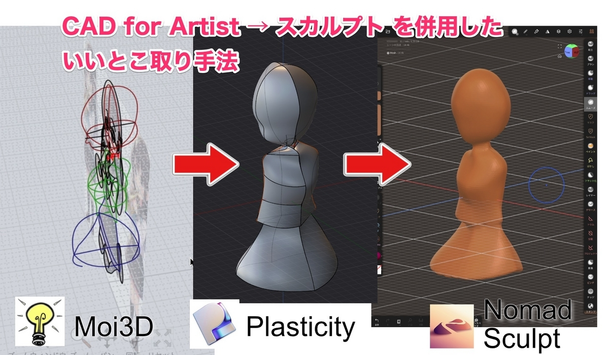
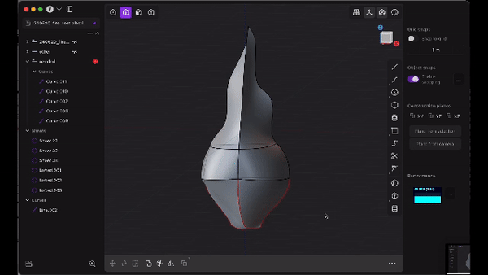
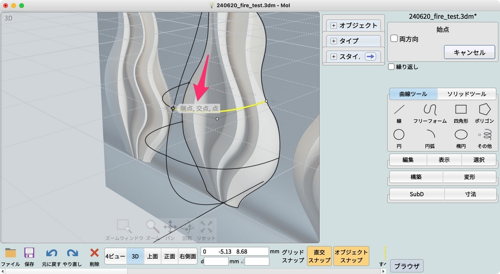
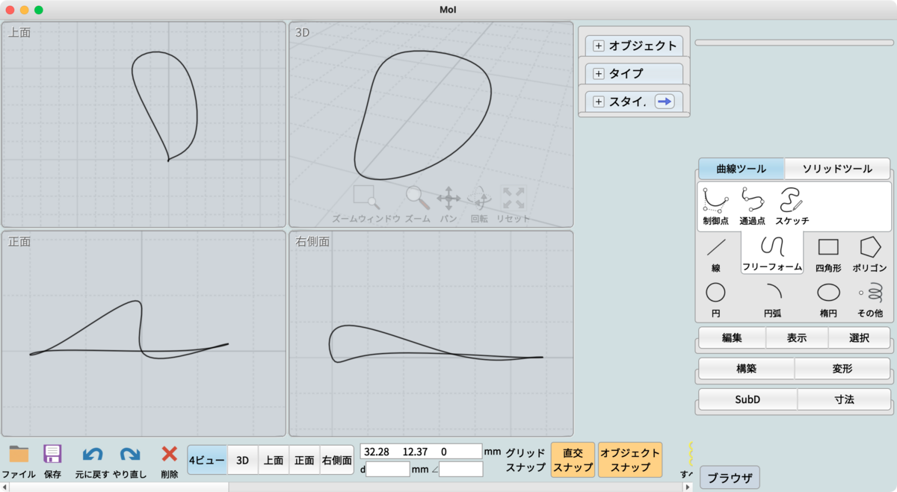
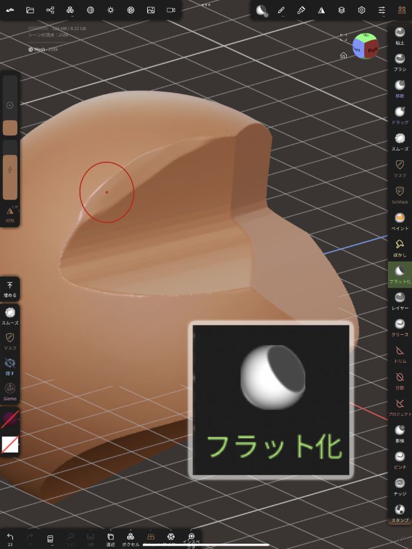
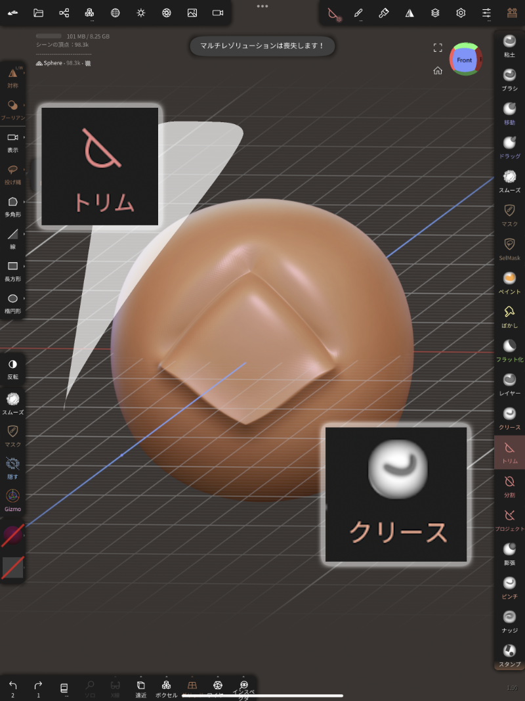
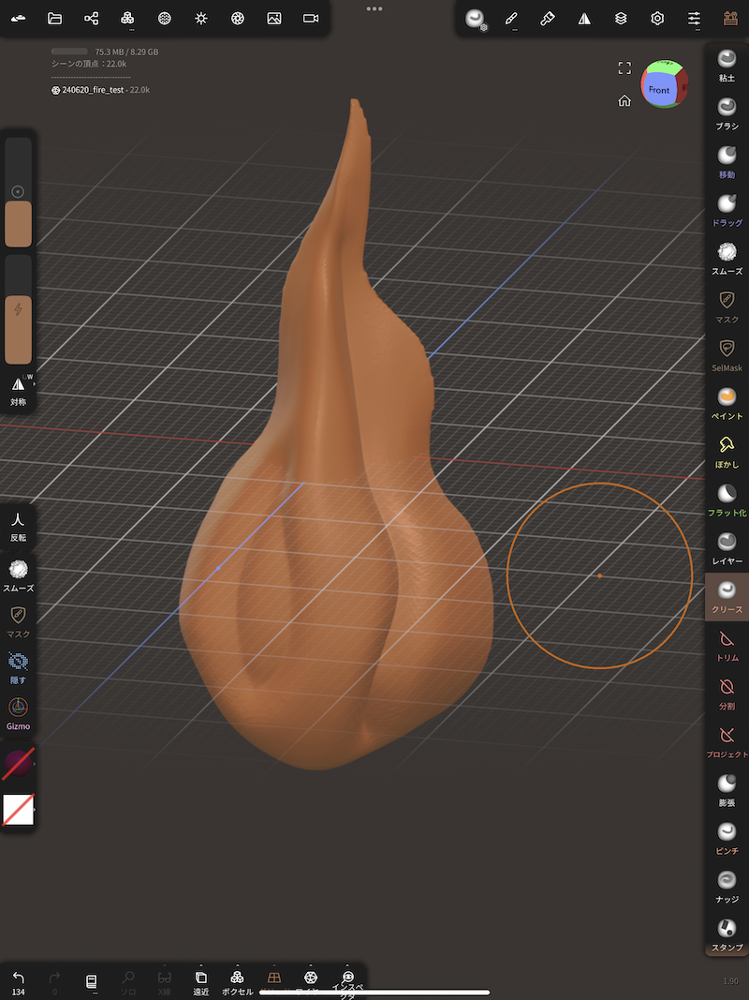
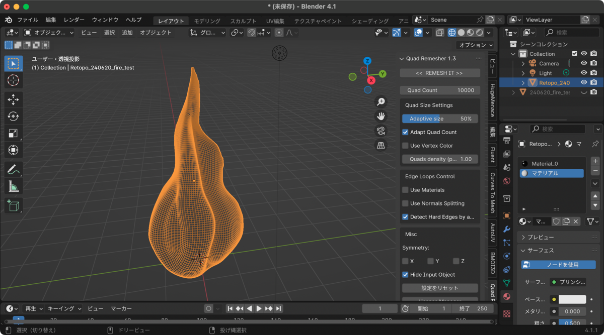
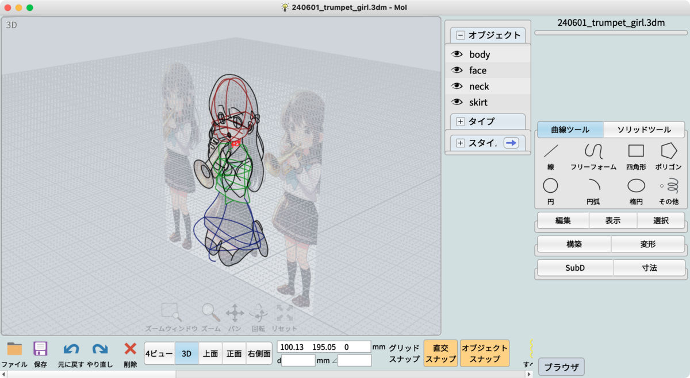
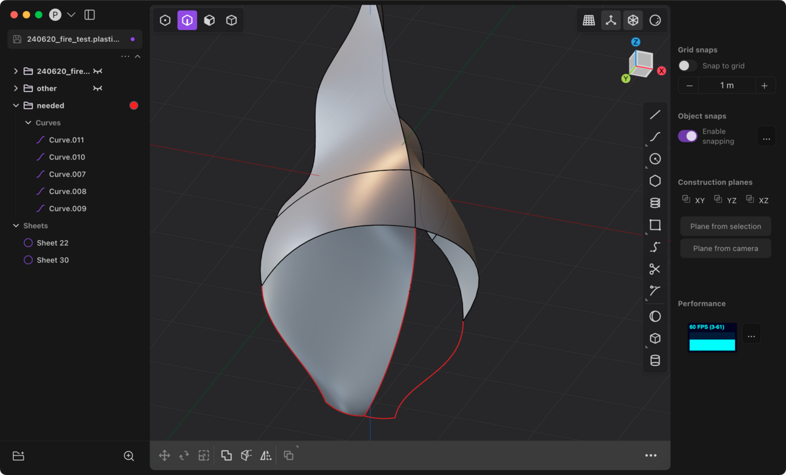

(全体の4記事目になります。他パートへのリンク: Part1, Part2, Part3, Part4, Part5, Part6 )
前回の記事で、「いいとこ取り」手法における、CAD側のポイントを解説しました。今回は後半として、主にスカルプトツール側のノウハウを記載していきます。
今回はこの目次の中から、3以降を解説していきます。（1, 2は前記事を参照。）
振り返りを兼ねて、少し前回の最終部分に関する、CADの話から入りたいと思います。
前回は、以下のGIFアニメの部分、つまり、CADでの立体化まで出来上がりました。

結構サクサクと作業をすすめていましたが、実はCADでは、3D空間の何をいま自分が操作しているのかを知ることがとても大事になります。
そのために実は、Moi3Dでも、Plasticityでも、点の上にヒントが表示されています。

これをヒントにしていくというのがとても大事で、実はこれ（端点、交点、接点など）を意識していないと、一見ちゃんと線がひけているようでも、おかしな線をひいてしまうことがあります。

例えば上の画像では、右上の3Dビューで見ると、綺麗なテニスラケットの形をしているように見えますが、左下や右下の三面図を見ると、実はぐにゃぐにゃして縦横無尽に線を引いてしまっています。
点の上に表示されるヒント（今回は「X線上」）を意識すると、失敗をなくしていくことができます。
さて、おさらいを終えたところで、ここからがこの記事の本編です。
前回CADで作ったモデルをNomad Sculptというスカルプトツールにインポートして、細かな部分を修正していきます。
今回はSTL形式でエクスポートして、iCloud Driveを経由してNomad Sculptに持ってきてみました。
前回の作業でちょっと丁寧にやりすぎたのもあって、とても綺麗にインポートできましたが、穴が空いていたりするときは、「膨張ブラシ → リメッシュ → 膨張ブラシ → リメッシュ」を繰り返して、穴埋めを行います。
これで、リメッシュの特性によって、何回も繰り返すことで自動的に穴埋めされていきます。
ところで、作業中に解像度が足りなくなってきて、解像度を上げると、スムーズブラシが効かなくなってくることがあります。
そんなときは、「フラット化（平坦化）ブラシ」を使うと、高解像度でもスムージングを行うことができます。

逆に角をハッキリと立てたいときは、「トリム」や「クリース」をうまく使います。

この辺のノウハウは、他のZBrushやNomad Sculptの記事のほうが詳しいかと思いますので、いろんな記事や動画を参考にされてください。（レビュワーの方に教えていただいた、Dave ReadさんのYouTubeチャンネルを参考に挙げておきます: Dave Reed - YouTube）
〜〜〜
さて、こうやってスカルプトツールでいろいろと補正や、手癖を加えていったものが、以下になります。


最初のモデルからすると、ディティールなどがだいぶ綺麗になっているのが分かるのではないかと思います。
実際には、スカルプト特有の問題である、角の部分にちょっとノイズのようなものが出たり、最後にリトポロジーという作業を行う必要がありますが、その辺は他の記事のほうが詳しいと思いますので今回は割愛します。（※ Dave Readさんの参考動画: Quad Remesher for Noobs // I'm the noob - YouTube）
「いいとこ取り」手法では、作りたいと思っている目的の形が一番うまく出るやり方を、CAD、Blender、スカルプトの中からうまく選んでいくのがコツなので、スカルプトツールは（あるいはCADさえも）必ずしも必須ではないというのは覚えておいてください。
あとはこうやって作ったモデルを、3DCoatやArmorPaintで色付けするなり、3Dプリントしてみるなり、ゲームエンジンに貼り付けるなり、自由に試行錯誤してみてください。Happy Hacking :)
ここからは全体的なTipsになりますが、「いいとこ取り」手法では、いろんなツール間を行き来します。
そのたびに、ちょっとずつファイル形式が変化したり、うまく表示されなかったりするのですが、以下を押さえておくことがポイントです。
GLTF (GLB)、FBX、STL、OBJから最適なものを選ぶ。
GLTF: 基本的に万能。シーンを丸ごと扱うのに向いてる。FBX: メッシュ + マテリアルが一つのファイルになる。物体をまとめて扱うのに向いてる。STL: 三角ポリゴン形式。CADからポリゴンだけを出力するときに最適。スカルプトの形だけ出力するときもOK。OBJ: 昔からあるやつ。互換性は最高。ただファイルが何かとばらける。今回の「いいとこ取り」手法では、いろんなツールを行き来するので、ツールが持っている機能に目移りしてしまいがちです。それもクリエイティビティを広げるという意味で良いことなのですが、全ての機能を無理に使おうとしないということも、今回の手法のポイントになります。
また、複数のツールを購入すると金銭的にも負担があるので、体験版やフリーソフトを利用して、自分の肌感に合うツールを選ぶというのも、クオリティを高めたり、時間等を節約するためのヒントになります。
（余談ですが、無料ソフトであるBlenderで、Blender MarketやGumroadでアドオンを買いすぎて結局有料ソフト並になる、なんていうのも、あるあるなのかもしれません…😂）
最後に、PhotoshopやIllustratorでもそうだと思いますが、レイヤー別にうまくフォルダ（グループ）を分けたり、色分けすると作業がとてもしやすいです。


例えば上の2つ目の画像では、neededというフォルダ（グループ）を作って赤色にして目立つようにし、一つ作業が終わったらotherというフォルダに入れて非表示にして、ぐちゃぐちゃになりやすいパスを整理しています。
さて、結果的に4記事分にもなってしまいましたが、CAD for Artist → スカルプト を使った「いいとこ取り」手法の良さが少しでも伝われば嬉しいです。
私自身、Blenderなどのポリゴンモデリングの難しさに何度も挫折していて、MoiやPlasticityなどの新しい直感的なCADソフトなどが登場することで、思い通りのイメージを形にできる喜びを日々実感しています。
ぜひ、楽しく制作する喜びを知ってほしいなというのがあり、今回書いた全4作に渡る記事となりました。是非感想などをコメントくださると嬉しいです。このやり方をぜひ皆さんなりにアレンジして、楽しく制作してほしいなと思います。
ちなみに今回紹介したソフトは、どれもあくまで一例に過ぎません。無料のソフトも続々と出ているし、Blender自体もスカルプトを機能として内包したりなど、どんどん進化しています。ぜひ考え方の良いところだけをうまく転用して、日々生まれる新しいソフト（例えばSubstance 3D ModelerやAdobe Neoなども今後に期待、Featherなんかも楽しそう）や、新しい考え方に応用していただければと思います。
（1記事目にも書きましたが、今回の手法はCC0として、自由に翻案・翻訳・転載などしていただければと思います。みなさんが自由に楽しく制作活動ができますように。）